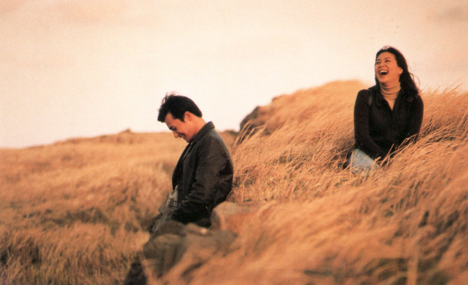

그런 영화가 있다. 남들은 별로라는데, 나만 좋아하는 영화. 그런 작품들의 리스트를 만들 수도 있을 것 같다. 당장 생각나는 영화가 있냐고 누군가 묻는다면 <연풍연가>는 빼놓지 않겠다. 여행자 장동건이 제주에서 만난 가이드 고소영과 감정의 결을 차곡차곡 쌓아가는 이야기다. 사랑 영화지만, 제주도에 대한 영화이기도 하다. 1999년 이 영화를 피카디리극장에서 봤을 때 대형 스크린에 잡히는 제주도의 풍광이 좋았다. 걷기를 좋아하는 기자는 영화를 보며 생각했다. 언젠가 제주를 혼자 걸어보리라.
홀로 걷게 된다면 이런 노래를 듣겠다며 정해놓은 리스트도 있다. 시인이자 수필가인 임의진씨가 선곡한 컴필레이션 음반인 <여행자의 노래> 시리즈에 실린 곡들을 무한 반복하며 걸으면 운치 있겠다 싶었다. 이 음반의 1집 3번 트랙인 ‘Waiting’이 풍기는 쓸쓸한 정서와 나 홀로 걷는 여행은 썩 잘 어울리리라 생각했다. 영화를 담당하던 시절, 제주가 고향인 영화홍보사의 Y대리에게 이 영화를 이야기하며 언젠가 제주도를 홀로 걷겠다고 했더니 이런 답이 돌아왔다. “제주에 영화처럼 예쁜 가이드는 없어요.”
시간이 없어서인지, 게을러서인지 나 홀로 제주 여행은 27년이 지난 지금까지 못 해봤다. 다만 3년 전 여름휴가 때 가족과 제주 조천읍 민박집에 머물렀던 기억은 선명하다. 서귀포 중문단지 등 관광지와는 달리 제주의 속살을 약간 맛본 듯하다. 외지인을 대하는 태도에서 경계심과 거리감이 느껴졌던 것도 사실이다. 낯선 사람을 쉽게 받아들이지 않는 ‘섬의 시간’이 따로 있는지도 모르겠다. 그래도 제주는 아름다웠다.